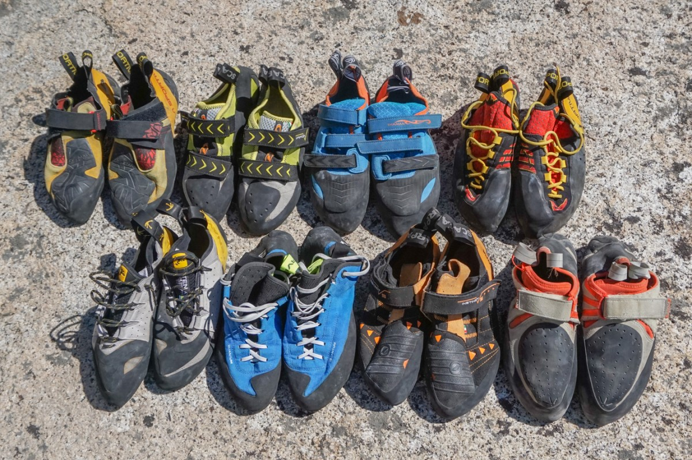
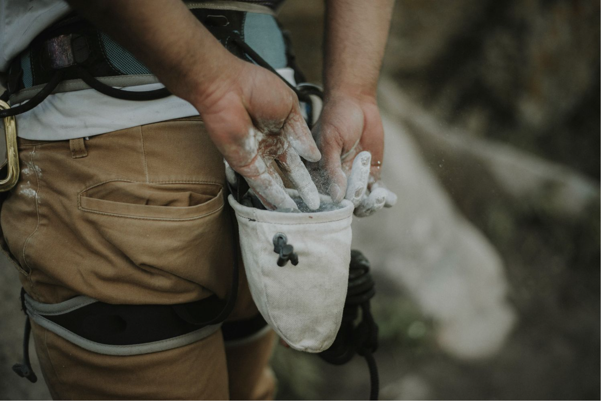

Bouldering shoes are specialized footwear designed to provide climbers with the precise fit and grip needed to ascend challenging routes. These shoes typically feature a snug, downturned shape to maximize contact with the rock or climbing holds, a sticky rubber sole for optimal traction, and a low-profile design for enhanced sensitivity. Prices for bouldering shoes can vary widely depending on the brand, model, and features. Entry-level shoes can cost around $50 to $100, offering basic performance for beginners. Mid-range options with better materials and performance may range from $100 to $200, catering to intermediate climbers. High-end bouldering shoes, often preferred by advanced climbers, can exceed $200, with cutting-edge technology and premium materials.

Chalk is a common accessory for climbers, helping to keep hands dry and improve grip on holds. Climbing chalk is typically available in loose powder or chalk ball form. Loose chalk, which is often used in a chalk bag, can range from $5 to $20 for a bag of varying sizes. Chalk balls are a convenient option, with prices typically ranging from $2 to $10. Some climbers also opt for liquid chalk, which offers longer-lasting dryness, and prices for these products can be between $10 and $20 or more. Prices for both bouldering shoes and chalk may vary based on brand reputation, quality, and regional market conditions.